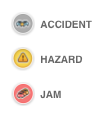

<!DOCTYPE html>
<html>
  <head>
    <title>Flooding</title>
    <meta name="viewport" content="initial-scale=1.0, user-scalable=no" />
    <meta http-equiv="content-type" content="text/html; charset=UTF-8"/>
    <link rel="shortcut icon" href="http://cartodb.com/assets/favicon.ico" />
    <style>
      html, body, #map {
        height: 100%;
        padding: 0;
        margin: 0;
      }
      #waze_logo { 
          position: absolute; 
          bottom: 1px; 
          left: 75px; 
          height: 30px; 
          text-align: left;
        }  
      #legend { 
          position: absolute; 
          bottom: 80px; 
          left: 20px; 
          height: 140px; 
          text-align: right;
        }   
        .roundrect {
          border-radius: 15px;
        }
    </style>
    <link rel="stylesheet" href="https://cartodb-libs.global.ssl.fastly.net/cartodb.js/v3/3.15/themes/css/cartodb.css" />
    <!--[if lte IE 8]>
      <link rel="stylesheet" href="http://libs.cartocdn.com/cartodb.js/v3/themes/css/cartodb.ie.css" />
    <![endif]-->
    <link rel="stylesheet" href="http://libs.cartocdn.com/di.js/v0/themes/css/deep-insights.css" />
    <script src=" http://libs.cartocdn.com/di.js/v0/deep-insights.uncompressed.js"></script>
    <script src="https://cartodb-libs.global.ssl.fastly.net/cartodb.js/v3/3.15/cartodb.js"></script>
  </head>
  <body>
    <div id="map"></div>
    <!-- <div id='waze_logo'>
       
    </div>
    <div id='legend'>
       
    </div> -->
    
    <!-- include cartodb.js library -->
    <!-- <script src="http://libs.cartocdn.com/cartodb.js/v3/cartodb.js"></script> -->
    <script>
      // var dataLayer;
      // var d = new Date()
      // var n = d.getTimezoneOffset();
      // console.log(n)
      // var minDif = (-n); //* 100000000;
      // console.log(d)
      // console.log(n)
      // console.log(minDif)
      // console.log('test')
      // function pad(n, width, z) { 
      //       z = z || '0'; n = n + ''; return n.length >= width ? n : new Array(width - n.length + 1).join(z) + n; 
      //     } 
      //     var days = ['Sunday','Monday','Tuesday','Wednesday','Thursday','Friday','Saturday']; 
      function main() {
        var map = new L.Map('map', {
          zoomControl: true,
          scrollWheelZoom: false, 
          //zoomControl: false,
          center: [30.40, -91.35],
          zoom: 9
        });
        // L.tileLayer('http://{s}.basemaps.cartocdn.com/dark_all/{z}/{x}/{y}.png', {
        //   attribution: '&copy; <a href="http://www.openstreetmap.org/copyright">OpenStreetMap</a> contributors, &copy; <a href="http://cartodb.com/attributions">CartoDB</a>'
        // }).addTo(map);
       

        // var baselayer = L.tileLayer('http://{s}.basemaps.cartocdn.com/light_all/{z}/{x}/{y}.png', {
        //   attribution: '&copy; <a href="https://www.waze.com" target="_blank">Waze basemaps</a>'
        // }).addTo(map);
        cartodb.createLayer(map, 'https://nygeog.carto.com/api/v2/viz/113cab80-6624-11e6-91dd-0ee66e2c9693/viz.json').addTo(map)
        .on('done', function(layer) {
            layer.setZIndex(5);
        });

        // cartodb.createLayer(map, 'https://team.carto.com/u/sheehan-carto/api/v3/viz/40f4786a-661c-11e6-913c-0ecd1babdde5/viz.json').addTo(map)
        // .on('done', function(layer) {
        //     layer.setZIndex(5);
        // });

        esriAttr = 'Tiles &copy; Esri &mdash; Source: Esri, i-cubed, USDA, USGS, AEX, GeoEye, Getmapping, Aerogrid, IGN, IGP, UPR-EGP, and the GIS User Community'
        esriUrl = 'https://server.arcgisonline.com/ArcGIS/rest/services/World_Imagery/MapServer/tile/{z}/{y}/{x}'

        var baseLayer1 = L.tileLayer(esriUrl, {
                  attribution: esriAttr
                }).setOpacity(0.5).addTo(map);

        var topLayer1 = L.tileLayer('https://ngs-storm-viewer-web.azurewebsites.net/storms/tilesa/services/tileserver.php/20160818_RGB/{z}/{x}/{y}.png', {
          attribution: '&copy; <a href="http://www.ngs.noaa.gov/" target="_blank">NGS Storm Viewer</a>'
        }).addTo(map);

        var topLayer2 = L.tileLayer('https://ngs-storm-viewer-web.azurewebsites.net/storms/tilesa/services/tileserver.php/20160814_RGB/{z}/{x}/{y}.png', {
          attribution: '&copy; <a href="http://www.ngs.noaa.gov/" target="_blank">NGS Storm Viewer</a>'
        }).addTo(map);

        var topLayer3 = L.tileLayer('https://ngs-storm-viewer-web.azurewebsites.net/storms/tilesa/services/tileserver.php/20160815_MOS/{z}/{x}/{y}.png', {
          attribution: '&copy; <a href="http://www.ngs.noaa.gov/" target="_blank">NGS Storm Viewer</a>'
        }).addTo(map);

        cartodb.createLayer(map, 'https://nygeog.carto.com/api/v2/viz/113cab80-6624-11e6-91dd-0ee66e2c9693/viz.json').addTo(map)
        .on('done', function(layer) {
            layer.setZIndex(5);
        });
        
        //mapUrl='https://team.carto.com/u/sheehan-carto/api/v3/viz/40f4786a-661c-11e6-913c-0ecd1babd;de5/viz.json'
        //mapUrl='https://nygeog.carto.com/api/v2/viz/6dcc3060-663c-11e6-ba4c-0e233c30368f/viz.json' 
        mapUrl='https://team.carto.com/u/sheehan-carto/api/v3/viz/af7a2d1e-6641-11e6-9d5a-0e3ebc282e83/viz.json'

        cartodb.createLayer(map,mapUrl).addTo(map).done(function(layer) {
          layer.setZIndex(2);
        })


        // mapUrl='https://team.carto.com/u/sheehan-carto/api/v3/viz/40f4786a-661c-11e6-913c-0ecd1babd;de5/viz.json'
        // mapUrl='https://nygeog.carto.com/api/v2/viz/6dcc3060-663c-11e6-ba4c-0e233c30368f/viz.json'
        //cartodb.createVis('map', mapUrl);
        // cartoViz = cartodb.createVis('map', mapUrl, {//options
        //     // center_lat:36,
        //     // center_lon:0,
        //     // zoom:8,
        //     // legends:true,    
        //     // shareable:true,
        //     // title:true,
        //     // description:true,
        //     search:false,
        //     //zoomControl:false,
        //     // loaderControl:true,
        //     // cartodb_logo:true,
        //     // infowindow:true,
        //     // time_slider:false,
        //     layer_selector:true,
        //     // legends:true,
        //     // https:true,
        //     scrollwheel:false,
        //     // fullscreen:true,
        //     // mobile_layout:true,
        //     // force_mobile:false,
        //     //no_cdn:true
        //   })//.addTo(map);

         //  turnOff = cartoViz.vis.getLayers()[0]
         //  turnOff.hide()
         // cartoViz.getSubLayer.hide();
         // map.removeLayer(cartoViz);


        // map.attributionControl.setPrefix('<a href="http://leafletjs.com/" target="_blank">Leaflet</a>');
        // L.control.zoom({
        //   position:'bottomright'
        // }).addTo(map);
        // cartodb.createLayer(map, {
        //   type: "torque",
        //   order: 1,
        //   https:true,
        //   options: {
        //     query: "SELECT the_geom, the_geom_webmercator, cartodb_id, (gmt_time - interval '"+minDif+" minutes') as new_time, (case when type = 'JAM' then 1 when type = 'HAZARD' then 2 when type = 'ACCIDENT' then 3 end) as torque_category FROM waze_olympics_timeshift_final",
        //     table_name: "waze_olympics_timeshift_final",
        //     user_name: "nygeog",
        //     https:true,
        //     tile_style: $('#cartocss_template').html()
        //     }
        // },{https:true}).done(function(viz, layer) {
        //   //map.addLayer(layer);
        //   console.log(map.viz)
        //   //console.log(map.viz.timeSlider)
        //   //var slider = map.viz.timeSlider;
        //   //var slider = map.viz.overlays[0];
        //   var slider = map.viz.timeSlider;
        //   console.log(slider)
        //    slider.formatter(function(d) { 
        //       $('.time .value').css('width','160px'); 
        //       return pad(d.getMonth()+1,2) +'/'+ pad(d.getDate(),2) +'/'+ d.getFullYear() + ' ' + pad(d.getHours(),2) +':'+pad((Math.round(d.getMinutes()/15) * 15) % 60,2); //pad(d.getMinutes(),2)
        //   }) 
        // },{https:true}).addTo(map)
      }
      // you could use $(window).load(main);

          // var linkViz = 'https://nygeog.carto.com/api/v2/viz/113cab80-6624-11e6-91dd-0ee66e2c9693/viz.json'

          // cartodb.deepInsights.createDashboard('map', linkViz, {}, function(err, dashboard) {
          //     // update a dashboard widget
          //     var formulaWidget = dashboard.getWidget('whatever-id')
          //     formulaWidget.update({ title: 'this is the title' });

          //     // update map layers
          //     var map = dashboard.getMap();
          //     map.getLayer(1).set('cartocss', CARTOCSS);

          //     // create a new widget on layer 2
          //     var params = {
          //       "type": "category",
          //       "title": "Metro line",
          //       "type": "aggregation",
          //       "column": "closest_metro_line",
          //       "aggregationColumn": "closest_metro_line",
          //       "aggregation": "count",
          //     };
          //     // adds a categoty using column `test` from the second layer
          //     dashboard.createCategoryWidget(params, map.getLayer(2))
          // });
      window.onload = main;
    </script>

    <!-- <iframe width="100%" height="520" frameborder="0" src="https://team.carto.com/u/sheehan-carto/builder/af7a2d1e-6641-11e6-9d5a-0e3ebc282e83/embed" allowfullscreen webkitallowfullscreen mozallowfullscreen oallowfullscreen msallowfullscreen></iframe> -->
      
  </body>
</html>
